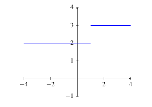
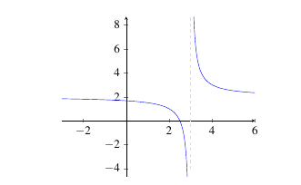
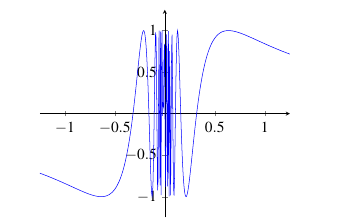
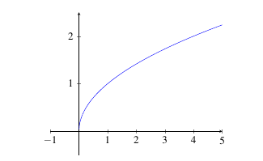
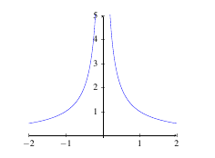
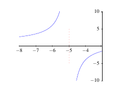
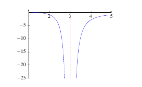

2.2 The Limit of a Function
The Idea of a Limit
Think about walking along the graph of the function \(y = f(x)\) and when you get close to the point on the graph where \(x = a\), you ask yourself ``What \(y\) value am I standing on?’’, that is the basic idea of a limit.
Definition: Let \(f\) be a function defined on some interval \(I\) containing a point \(a\) (though possibly not defined at \(a\)), we say the limit of \(f(x)\) as \(x\) approaches \(a\) is \(L\), written \[\displaystyle\lim_{x \rightarrow a} f(x) = L,\] if the value of \(f(x)\) gets arbitrarily close to a particular real number \(L\) as \(x\) gets close to \(a\).
We can try to determine the value of a limit by evaluating the function at points ``close’’ to \(a\) to see what value the function appears to be getting close to.
Example: Determine the value of \[\displaystyle\lim_{x \rightarrow 2} x^3.\]
Solution: Click here for solution
Example: Determine the value of \[\displaystyle\lim_{x \rightarrow 0} \cos(x).\]
Solution: The function is \(f(x) = \cos(x)\) and \(a = 0\) in this example. So we evaluate \(f(x)\) at \(x\) values close to 0.
We check values of \(a\) that are close to 0 (but slightly smaller).
| \(a\) | \(\cos(a)\) |
|---|---|
| -0.1 | 0.995004165 |
| -0.01 | 0.99995 |
| -0.001 | 0.9999995 |
| -0.0001 | 0.999999995 |
It appears that the function value gets close to 1.
Next, we check the values of \(a\) close to 0 (but larger than 0).
| \(a\) | \(\cos(a)\) |
|---|---|
| 0.1 | 0.995004165 |
| 0.01 | 0.99995 |
| 0.001 | 0.99999951 |
| 0.0001 | 0.999999995 |
It appears that the function get close to 1 again.
When we take values of \(x\) that are close to \(0\) (be they larger than 0 or smaller than 0), it appears that \(f(x) = \cos(x)\) gets close to 1. Hence, \(\displaystyle\lim_{x \rightarrow 0} \cos(x) = 1\).
Practice Problems
\(\displaystyle\lim_{x \rightarrow 1} x^2\)
\(\displaystyle\lim_{x \rightarrow 2} x^2 - 3x + 1\)
\(\displaystyle\lim_{x \rightarrow -2} 2x + 5\)
\(\displaystyle\lim_{x \rightarrow 3} \sqrt{x}\)
\(\displaystyle\lim_{x \rightarrow \pi/4} \tan(x)\)
\(\displaystyle\lim_{x \rightarrow -1} e^x\)
\(\displaystyle\lim_{x \rightarrow 0} \frac{\sin(x)}{x}\)
\(\displaystyle\lim_{x \rightarrow 0} \frac{1 - \cos(x)}{x}\)
Left and Right Limits
Left and right limits are similar to the limits discussed in the previous section except they only need to be evaluated from one side. This makes sense if, for example, we have a function that is not defined for values larger or smaller than \(a\).
Definition: Let \(f\) be a function defined on some open interval \(I\) with \(a\) as the left endpoint, we say the limit of \(f(x)\) as \(x\) approaches \(a\) from the right is \(L\), written \[\displaystyle\lim_{x \rightarrow a^+} f(x) = L,\] if the value of \(f(x)\) gets arbitrarily close to a particular real number \(L\) as \(x\) gets close to \(a\) using values larger than \(a\).
Example: Determine the value of \[\displaystyle\lim_{x \rightarrow 1^+} 3\sqrt{x-1}.\]
Solution: Click here for solution
In the previous example, the domain of \(f(x) = 3\sqrt{x-1} + 1\) is \([1,\infty)\). So, it makes little sense to try to evaluate the limit for values less than 1.
Example: Determine the value of \[\displaystyle\lim_{x \rightarrow -3^+} \frac{x^2 -5x -6}{x-3}.\]
Solution: The function is \(f(x) = \frac{x^2 +5x +6}{x+3}\) and \(a = -3\) in this example. So we evaluate \(f(x)\) at \(x\) values close to -3 but larger than -3.
| \(a\) | \(f(a)\) |
|---|---|
| -2.9 | -0.9 |
| -2.99 | -0.99 |
| -2.999 | -0.999 |
| -2.9999 | -0.9999 |
| -2.99999 | -0.99999 |
When \(x\) gets close to \(-3\) (using values larger than -3), we see that the limit appears to go to -1.
Definition: Let \(f\) be a function defined on some open interval \(I\) with \(a\) as the right endpoint, we say the limit of \(f(x)\) as \(x\) approaches \(a\) from the left is \(L\), written \[\displaystyle\lim_{x \rightarrow a^-} f(x) = L,\] if the value of \(f(x)\) gets arbitrarily close to a particular real number \(L\) as \(x\) gets close to \(a\) using values smaller than \(a\).
Example: Determine the value of \[\displaystyle\lim_{x \rightarrow 3^-} |x^2-9|.\]
Solution: Click here for solution
Example: Determine the value of \[\displaystyle\lim_{x \rightarrow -2^-} \sqrt{2x +6}.\]
Solution: The function is \(f(x) = \sqrt{-(2+x)}\) and \(a = -2\) in this example. So we evaluate \(f(x)\) at \(x\) values close to -2 but smaller than -2.
| \(a\) | \(f(a)\) |
|---|---|
| -2.1 | 0.8944271910 |
| -2.01 | 0.9899494937 |
| -2.001 | 0.9989994995 |
| -2.0001 | 0.9998999950 |
| -2.00001 | 0.9999899999 |
When \(x\) gets close to \(-2\) (using values smaller than -2), we see that the limit appears to go to 1.
Practice Problems
Determine the value of each of the following limits by evaluating at points close to the given \(a\):
\(\displaystyle\lim_{x \rightarrow 0^+} 2\sqrt{x} - 5\)
\(\displaystyle\lim_{x \rightarrow 2^-} \sin(x)\)
\(\displaystyle\lim_{x \rightarrow \pi^+} \cos(2x)\)
\(\displaystyle\lim_{x \rightarrow -2^-} \frac{x^2 - 4}{x+2}\)
\(\displaystyle\lim_{x \rightarrow 1^+} \frac{x^3 - 1}{x-1}\)
\(\displaystyle\lim_{x \rightarrow -1} \ln(e^x + 1)\)
Limits That Do Not Exist
A question that one might ask is if we are given a function \(f\) and a value of \(a\) (and \(f\) exists in some interval around \(a\)), does the limit of \(f(x)\) as \(x\) approaches \(a\) always exist? The answer is no. Typically, there are 4 reasons why a limit does not exist:
- The one-sided limits are not equal,
- The function does not approach a finite value,
- The function does not approach a particular value - for example, it oscillates,
- The \(x\)-value is approaching the endpoint of a closed interval.
Here are some examples that illustrate these situations.
Example: Let \(f(x)\) be the function in the figure below. Determine why \(\displaystyle\lim_{x \rightarrow 1} f(x)\) does not exist.
|  |
|---|
Solution: Click here for solution
Example: Let \(f(x)\) be the function in the figure below. Determine why \(\displaystyle\lim_{x \rightarrow 3} f(x)\) does not exist.
|  |
|---|
Solution: The definition of a limit states that \(\displaystyle\lim_{x \rightarrow 3} f(x) = L\) if the value of \(f(x)\) gets arbitrarily close to a particular real number \(L\) if \(x\) is close enough to 3. In this diagram, we notice that the function gets infinitely large as \(x\) approaches 3. In order for the limit to exist, it must approach a particular real number (and infinity is not actually a real number). Therefore, we conclude that the limit does not exist.
Example: Determine why \(\displaystyle\lim_{x \rightarrow 0} \sin(1/x)\) does not exist. The graph of \(\sin(1/x)\) is below.
|  |
|---|
Solution: The definition of a limit states that \(\displaystyle\lim_{x \rightarrow 0} f(x) = L\) if the value of \(f(x)\) gets arbitrarily close to a particular real number \(L\) if \(x\) is close enough to 0. Here, \(f(x)\) oscillates between the values of 1 and -1 faster and faster as \(x\) approaches 0. Since it does not converge to a particular real number, we say the limit does not exist.
Example: Determine why \(\displaystyle\lim_{x \rightarrow 0} \sqrt{x}\) does not exist. The graph of \(\sqrt{x}\) is provided below.
|  |
|---|
Solution: The function given in this limit, \(f(x) = \sqrt{x}\), is only defined on \([0, \infty)\). So, we cannot approach 0 using \(x\)-values from the left. The definition of a limit requires the function to approach the same limit value no matter which direction \(x\) comes from. Here, that is not the case. Therefore, the limit does not exist.
Practice Problems
- Determine the value of each of the following limits, if they exist, by evaluating at points close to the given \(a\):
\(\displaystyle\lim_{x \rightarrow 5} 3\sqrt{x-5}\)
\(\displaystyle\lim_{x \rightarrow \pi/2} \tan(x)\)
\(\displaystyle\lim_{x \rightarrow 3} \frac{1}{x-3}\)
\(\displaystyle\lim_{x \rightarrow 0} \cos(\pi/(2x))\)
\(\displaystyle\lim_{x \rightarrow -6} \frac{|x+6|}{x+6}\)
\(\displaystyle\lim_{x \rightarrow -4} \frac{x+4}{x^2 + 8x + 16}\)
- Determine a value \(c\) so that each of the following limits exist.
\(\displaystyle\lim_{x \rightarrow 1} f(x)\) exits if \(f(x) = \begin{cases} 2x & x > 1 4x-c & x < 1 \end{cases}\)
\(\displaystyle\lim_{x \rightarrow 0} f(x)\) exists if \(f(x) = \begin{cases} x^2 - 3x + c & x > 0\\ \cos(x) & x < 0 \end{cases}\)
- Determine the value of \(\displaystyle\lim_{x \rightarrow -3} f(x)\) or determine that it does not exist if \[f(x) = \begin{cases} 2x - 5 & x \not = -3 \\ 1 & x = 3 \end{cases}.\]
Infinite Limits and Vertical Asymptotes
Let \(n \not = 0\). If we have a limit of the form \[\displaystyle\lim_{x \rightarrow a} f(x) = \dfrac{n}{0},\] we say that the limit does not exist. We can determine from the form \(\frac{n}{0}\) that the function value becomes infinitely large as either a positive number or negative number. If the one-sided limits are the same, we say either \[\displaystyle\lim_{x \rightarrow a} f(x) = \infty \;\;\;\; \text{or} \;\;\;\; \displaystyle\lim_{x \rightarrow a} f(x) = -\infty.\] We can determine if the limit is \(\infty\) or \(-\infty\) by looking at the sign of \(n\) in the fraction \(\frac{n}{0}\).
|  |
|---|
Example: Determine the value of \(\displaystyle\lim_{x \rightarrow 0} \frac{1}{x^4}\).
Solution: Click here for solution
Example: Determine \(\displaystyle\lim_{x \rightarrow -5} \frac{x}{x+5}\).
Solution: By directly substituting \(-5\) into the function \(f(x) = \frac{x}{x+5}\), we have a fraction of the form \(\frac{-5}{0}\). So, this limit does not exist. However, we determine the value of the one-sided limits to see if we have an infinite limit.
From the right, we have \(x\) values that are a little larger than -5 (for example, -4.9, -4.99, -4.999, etc.). If we put those into \(f(x) = \frac{x}{x+5}\), the numerator is negative while the denominator is positive. Hence, the fraction will be negative. So we say \(\displaystyle\lim_{x \rightarrow -5^+} \frac{x}{x+5} = -\infty\).
From the left, we have \(x\) values that are slightly smaller than -5 (for example, -5.1, -5.01, -5.001, etc.). If we put those into \(f(x) = \frac{x}{x+5}\), the numerator and denominator are both negative. Thus, the fraction will be positive. So, \(\displaystyle\lim_{x \rightarrow -5^-} \frac{x}{x+5} = \infty\).
Since the one-sided limits are different, the limit does not exist.
|  |
|---|
Example: Determine \(\displaystyle\lim_{x \rightarrow 3} \frac{x-1}{x^2 - 6x + 9}\).
Solution: We substitute \(x = 3\) into the function \(f(x) = \frac{1-x}{x^2 - 6x + 9}\) and find that we have a function of the form \(\frac{-2}{0}\). So, the limit does not exist. We look at one-sided limits to determine if we have an infinite limit.
First, we factor \(f(x) = \frac{1-x}{x^2 - 6x + 9} = \frac{1-x}{(x-3)^2}\). Since the denominator is a perfect square, it will always be positive. The numerator, depending on what values we chose close to 3 will either be slightly larger than -2 (if \(x = 2.9, 2.99, 2.999\), etc.) or slightly smaller than -2 (if \(x = 3.1, 3.11, 3.111\), etc.). Either way, the numerator is negative and the denominator is positive. So, the fraction will be negative for both one-sided limits.
Therefore, \(\displaystyle\lim_{x \rightarrow -3} \frac{1-x}{(x-3)^2} = -\infty\).
|  |
|---|
In each of the previous examples, the infinite limit represents a . The graph of a function \(y = f(x)\) has a vertical asymptote at \(x = a\) if the \(y\) values get infinitely large as \(x\) approaches \(a\). More precisely, if \(\displaystyle\lim_{x \rightarrow a^-} f(x) = \pm \infty\) and \(\displaystyle\lim_{x \rightarrow a^+} f(x) = \pm \infty\), then \(f(x)\) has a vertical asymptote at \(x = a\).
In order to find vertical asymptotes, look for places where the function is undefined then take right and left limits to determine if they are infinitely large.
Example: Find all vertical asymptotes for \(f(x) = \frac{x-3}{x^2 -x - 6}\).
Solution: By factoring, we see that the denominator is 0 when \(0 = x^2 - x - 6 = (x-3)(x+2)\) or when \(x = 3\) or \(-2\). We examine \(\displaystyle\lim_{x \rightarrow 3} f(x)\) and \(\displaystyle\lim_{x \rightarrow -2} f(x)\) to determine if they are limits that do not exist.
Note that \[\begin{align*} \displaystyle\lim_{x \rightarrow 3} f(x) &= \displaystyle\lim_{x \rightarrow 3} \dfrac{x-3}{x^2 - x - 6}\\ &= \displaystyle\lim_{x \rightarrow 3} \dfrac{x-3}{(x-3)(x+2)}\\ &= \displaystyle\lim_{x \rightarrow 3} \dfrac{1}{x+2} \hspace{0.5in} \text{at all values other than 3}\\ &= \dfrac{1}{5}.\end{align*}\] Since \(\displaystyle\lim_{x \rightarrow 3} f(x) = 1/5\), the limit exists and there is no vertical asymptote at 3. In this case, there is a removable discontinuity at 3.
The other possible asymptote is at \(x = -2\). \[\begin{align*} \displaystyle\lim_{x \rightarrow -2} f(x) &= \displaystyle\lim_{x \rightarrow -2} \dfrac{x-3}{x^2 - x - 6}\\ &= \displaystyle\lim_{x \rightarrow -2} \dfrac{x-3}{(x-3)(x+2)}\\ &= \displaystyle\lim_{x \rightarrow -2} \dfrac{1}{x+2}.\end{align*}\] When we apply the limit, we find a \(1/0\) form. So, we try one sided limits.
With \(x\)-values slightly smaller than -2, the fraction \(\frac{1}{x+2} < 0\) and thus \[\displaystyle\lim_{x \rightarrow -2^-} f(x) = -\infty.\]
For \(x\)-values slightly larger than -2, the fraction \(\frac{1}{x+2} > 0\) and so \[\displaystyle\lim_{x \rightarrow -2^+} f(x) = \infty.\]
Since both limits are infinity, we have a vertical asymptote at \(x = -2\).
Practice Problems
- Determine the value of each of the following limits. If they don’t exist, determine if they are an infinite limit.
\(\displaystyle\lim_{x \rightarrow 5} \frac{1}{x-5}\)
\(\displaystyle\lim_{x \rightarrow 0} \frac{2x-1}{x}\)
\(\displaystyle\lim_{x \rightarrow -3} \frac{x+8}{x^2 - 6x + 9}\)
\(\displaystyle\lim_{x \rightarrow -4} \frac{x+1}{x+4}\)
\(\displaystyle\lim_{x \rightarrow -6} \frac{x+1}{|x+6|}\)
\(\displaystyle\lim_{x \rightarrow 2} \frac{x+4}{x^2 + 4x + 4}\)
- Determine any vertical asymptotes for the given functions.
\(f(x) = \dfrac{x-5}{x^2 -25}\)
\(g(x) = \dfrac{x^3 - 8}{x^2 - 4x + 4}\)
\(h(x) = \dfrac{x^2 + 3x + 2}{x^2 + 2x + 1}\)
\(j(x) = \dfrac{x^3 - 1}{x^3 + 8}\)